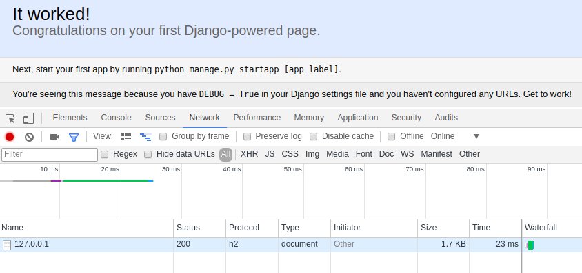

HTTP/2
Artem Malyshev
@proofit404
Why?
HTTP/1 is the power
running Internet
HTTP/1 problems
- Designed over 20 years ago
- Have 6 RFC at that moment
- Network inefficient
- Text based
But we like workarounds
- Image sprites
- Custom fonts
- Inline resources
- Resource concatenation
- Sharding
HTTP/2
principles
Implementations
Ace Aerys Akamai GHost Apache Tomcat http4s-blaze Brocade Traffic Manager Chatterbox Chromium libcurl Deuterium E2 Systems PATH Ericsson MSP F5 GFE H2O hpack http2dotnet HttpTwo httpbis hyper Shaka Jetty LiteSpeed Enterprise Microsoft Internet Explorer mod_h2 Mozilla Firefox Netty nghttp2 Radware node-http2 OkHttp River Sasazka second-transfer ShimmerCat SuaveIO Swoole Trusterd Twitter Undertow Vert.x WASD Warp Wireshark WKWebView cashpack proxygen firefly
Python
Cory Benfield

our example
Generating TLS sert
openssl req -x509 \
-newkey rsa:4096 \
-days 365 -nodes \
-keyout key.pem \
-out cert.pemtwisted
mitmproxy

Running Daphne
daphne \
--ssl \
--port=8000 \
--privateKey=key.pem \
--certKey=cert.pem \
project.asgi:channel_layerDjango Admin
True story